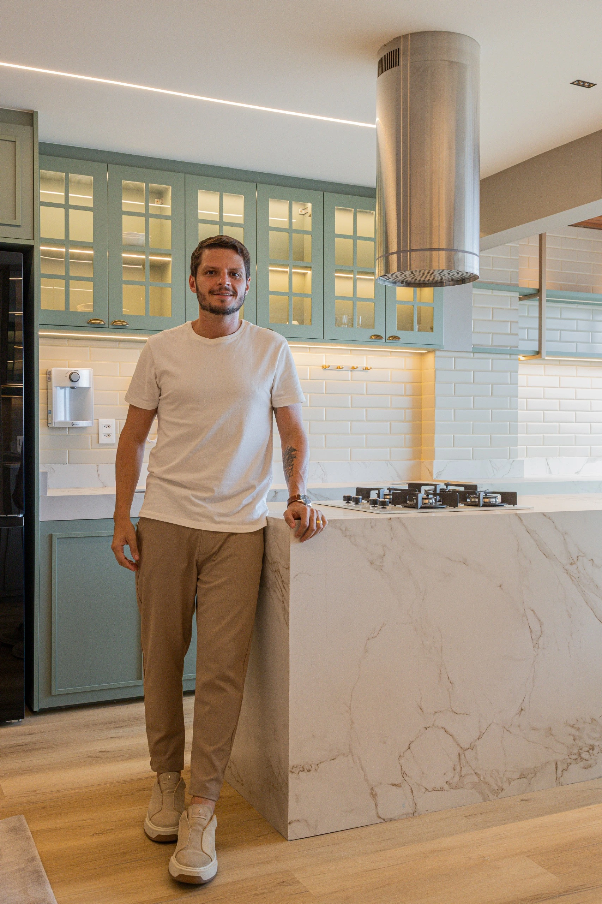
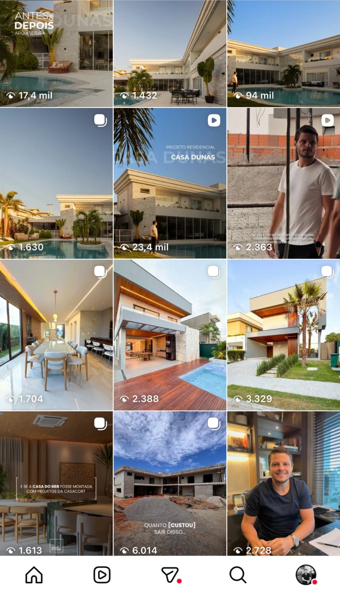

Posicionamento & Autoridade
Gestão de mídia social
Contexto
Arquiteto com forte identidade precisava refinar a comunicação digital sem perder autenticidade.
Desafio
Criar uma presença digital que refletisse a expertise profissional.
Direção criativa, pilares de conteúdo e roteirização.

